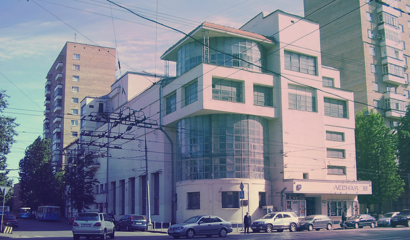

Дом культуры имени Зуева
Дом культуры имени Зуева— здание дома культуры в Москве, расположенное на Лесной улице; один из наиболее ярких и известных в мире памятников конструктивизма. На территории ДК работают театры, среди которых «Квартет И», «Другой театр».
История
Проект Дома культуры был создан архитектором Ильей Голосовым. Открытие состоялось 4 февраля 1930 года. По задумке архитектора внешний вид ДК должен был ассоциироваться с миром техники. Начало строительства было приурочено к 10-летию Октябрьской революции и завершено в августе 1929 года.
Архитектура жилого дома
Архитектура первого десятилетия после Октябрьской революции должна была отвечать вызовам нового времени. Наиболее ярко эти тенденции отразились в зданиях рабочих клубов — прежде русским архитекторам никогда не заказывали общественных зданий, предназначенных для организации как политических, так и культурных мероприятий. Динамичный характер эпохи выражался в принципиально в новых архитектурных решениях.
Влияние стилей
Родившийся под влиянием кубизма, дом культуры построен на основе асимметрично расположенных правильных геометрических тел. Композиционным центром здания является вертикальный остеклённый цилиндр, на который нанизан весь корпус с большими поверхностями окон. На углу здания, внутри этого цилиндра, расположена лестничная клетка[5][6]. «Внутреннее движение вертикальной цилиндрической формы как бы преодолело тяжесть горизонтальной формы и вырвалось на простор. Верхняя тонкая плита перекрытия над цилиндром уже не воспринимается как остановка движения, она скорее подчёркивает форму цилиндра и его главенствующую роль в композиции».
Отзывы при создании
Учитывая предназначение здания именно как клуба рабочих, Илья Голосов придал ему сходство с промышленной архитектурой. Центральный цилиндр вызывает ассоциацию с корпусом элеватора, горизонтальный «пояс» третьего этажа напоминает заводской переход-галерею. Большие застеклённые поверхности на фоне серой бетонной штукатурки усиливают впечатление промышленного сооружения. С. О. Хан-Магомедов писал:
«И.Голосов при проектировании клубов создавал сложные объёмные построения, главный акцент во внешнем облике здания он всегда переносил на один из объёмных элементов композиции, решая именного его крупно и предельно лаконично, а все остальные элементы нарочито усложняя и измельчая, чтобы зрительно подчинить их этой крупной форме (или как он его называл, субъективной массе). Для подчеркивания главенствующей роли крупно решённого элемента в общей композиции (обычно, асимметричной) он использовал приёмы динамического построения, контрасты стекла и глухой стены.».
Современники архитектора положительно отзывались о здании и считали, что среди общественных сооружений Дом культуры имени Зуева относится к числу удачных. Историк архитектуры А. В. Иконников отзывался цилиндре, являющемся композиционным центром здания, как о символе всемогущества труда, использующем совершенную технику, как об уникальной, запоминающейся форме.
Площадки
На территории ДК располагается ряд площадок:
- Малый хореографический зал площадью 140 м²;
- Зал малой формы площадью 40 м² и вместимостью 25 зрительских мест, предназначенный для репетиций и спектаклей малой формы;
- Круглый зал площадью 60 м², подходящий для занятий вокалом, танцами, репетиций;
- фойе первого этажа с известной «голосовской лестницей»;
- фойе третьего этажа, лестница которого проходит здесь внутри стеклянного цилиндра Дома культуры;
- Большой зал вместимостью 550 посадочных мест;
- Малый зал, рассчитанный на 130 посадочных мест и оснащённый двухуровневой сценой;
- Балетный зал, площадь которого составляет 150 м².
В здании работают несколько театральных студий. Основная площадка театра «Квартет И» имеет название Дом культуры имени Зуева.
Современное состояние
По мнению архитектора Алексея Гинзбурга, перестройки и реконструкции негативным образом отразились на состоянии Дома культуры и привели к его бедственному положению. Лоджии были закрыты, остекленная галерея снесена, а часть окон замурована.